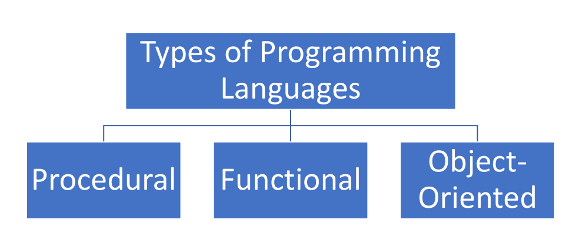

Programming is a way to instruct the computer to perform various task.
Computers only understands Binary i.e., 0’s and 1’s.
Instructing computers in Binary i.e. 0’s and 1’s are very difficult for humans so, to solve this issue we have programming languages
It is a computer language used by programmers to communicate with computers.

* Specifies a series of well-structured steps and procedures to compose a
program
* Contains a systematic order of statements functions and commands to
complete a task
*Writing a program only in pure functions i.e., never modify variables but
only create new ones as an output.
*Used in a situation where we have to perform lots of different
operations on the same set of data like ML.
*Revolves around objects.
*Code + Data = objects
*Developed to make it easier to develop, debug, reuse and maintain
software
"One programming language can be of all 3 types like- Python"
Java Follows procedural and object oriented both types .
*Perform type checking at compile time
*Errors will show at compile time
*Declare datatypes before use. Ex:In Java int a=10. Here, you are declaring the variable 'a' as
integer
*More control
*Perform type checking at runtime
*Error might not show till programs run
*No need to declare datatype of
variables. Ex : In javaScript let a=10.Here, you are not declaring the variable 'a' as integer.But it
will considered as integer based on the value that you given after '='
*Saves time in writing code but might
give error at runtime.
There are 2 types of memory
Stack & Heap memory
* Stack is an data Structure which stores the functions and reference variable one by one.
Machine only understand 0’s and 1’s, for humans it is very difficult to instruct computer in 0’s and 1’s so to avoid this issue we write our code in human readable language (Programming language)
* Java is one of the Programming Language
*The code written in java is human readable and it is saved using
extension .java
*This code is known as source code
*Java compiler converts the source code into byte code which have the
extension .class
* This byte code not directly run on system
* We need JVM (Java Virtual Machine) to run this
*Converts byte code to machine code i.e. 0’s and 1’s
*It translate the byte code line by line to machine code
→ It means that byte code can run on all operating system
→ We need to convert source code to machine code so computer can
understand it.
→ Compiler helps in doing this by turning it into executable code.
→ This executable code is a set of instruction s for the computer
→ After compiling C/C++ code we get .exe file which is platform dependent.
→ But after compiling Java code we get .class file which is Platform independent->WORA(Write Once Run
Anywhere)
→ In java we get byte code, JVM converts this to machine code.
→ Java is platform independent but JVM is platform dependent.
* Provide Environment to develop and run the java program.
* It is a package that includes :-
1. Development tools :- To provide an environment to run your
program.
2. JRE :- To Execute your program.
3. A compiler :- javac
4. Archiver :- Jar
5. Docs generator :- Javadoc
6. Interpreter/loader
* It is an installation package that provides environment to only run the
program.
*It consist of :-
1. Deployment technology
2. User interface toolkit
3. Integration libraries
4. Base libraries
5. JVM :- Java virtual Machine
After we get the .class file the next thing happen at runtime :
1. Class loader loads all classes needed to execute the program.
2. JVM sends code to bytecode verifier to check the format of code
→ Read .class file and generate binary data.
→ an Object of this class is created in heap
→ JVM verifies the .class file
→ allocates memory for class variables and default values
→ replace symbolic references from the type with direct reference.
→ All static variables are assigned with their values defined in the code
and static bock.
→ JVM contains the stack and heap memory locations.